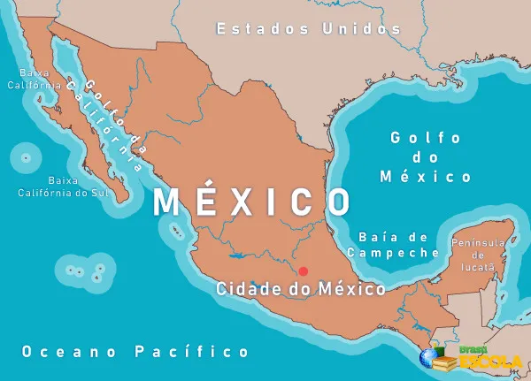

Conheça o México

O México é um país situado entre os Estados Unidos e a América Central, conhecido pelas praias no Pacífico e no Golfo do México e pela paisagem diversificada que inclui montanhas, desertos e selvas. Ruínas antigas, como Teotihuacán e a cidade maia de Chichén Itzá, estão espalhadas pelo país, assim como cidades da era colonial espanhola. Na capital, Cidade do México, lojas elegantes, museus renomados e restaurantes gourmet atendem às necessidades da vida moderna.
História
Antes da chegada dos europeus, o território mexicano foi habitado por grandes civilizações indígenas, como os maias, astecas e olmecas, que desenvolveram arquitetura, escrita e conhecimentos avançados em astronomia e agricultura.
Em 1519, o espanhol Hernán Cortés iniciou a conquista do Império Asteca, e em 1521, o México passou a ser uma colônia da Espanha. Durante quase 300 anos, foi chamado de Vice-Reino da Nova Espanha.
O país conquistou sua independência em 1821, após uma longa luta liderada por figuras como Miguel Hidalgo e José María Morelos. Depois disso, o México viveu períodos de instabilidade política, guerras civis e invasões estrangeiras (como a dos EUA e da França).
O México está localizado na América do Norte, fazendo fronteira ao norte com os Estados Unidos, ao sul com a Guatemala e Belize, e sendo banhado pelo Oceano Pacífico (a oeste) e pelo Golfo do México e Mar do Caribe (a leste). Sua capital é Cidade do México (Ciudad de México).
Bandeira

A bandeira do México tem três faixas verticais nas cores:
- Verde: representa a esperança e a independência.
- Branco: simboliza a pureza e a fé.
- Vermelho: lembra o sangue dos heróis que lutaram pela independência.
No centro, há um brasão com uma águia sobre um cacto, devorando uma serpente — imagem inspirada em uma antiga lenda asteca sobre a fundação da Cidade do México (Tenochtitlán).